Bodyshop Manual ➭ BODY & ACCESSORIES ➭ BODY STRUCTURE[PLASTIC BODY PARTS] ➭ PROCEDURE
PROCEDURE
D5E098050000B04
{: #wp1058560}
Repair of polypropylene bumpers having damage that has reached the surface of the polypropylene and are too serious to be restored by painting only.{: #wp1060720}
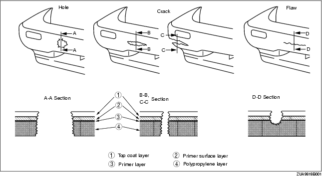
- Cut the rough edges around the damage with a knife to make it smooth. Sand the area with a sander to make an angle of about 45°.{: #wp1058583}
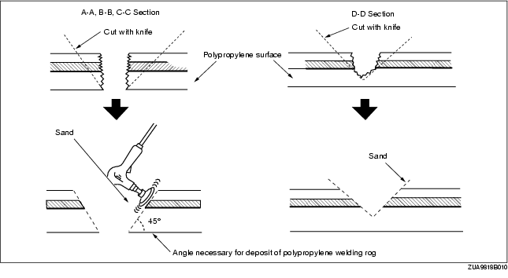
- Weld the damaged area.
• For repair of a cracked area, melt the crack together with a heat gun and a melting attachment.
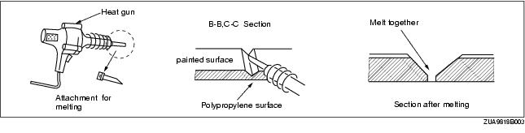
• For repair of a hole, degrease the area on both sides of the bumper and apply aluminium tape on the reverse side of the damage area.
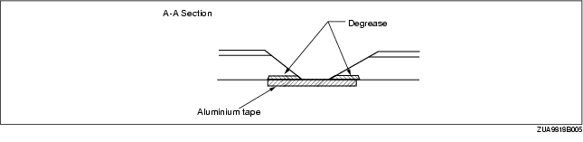
- Melt the polypropylene welding rod with a heat gun and deposit it the cracked area.{: #wp1058702}
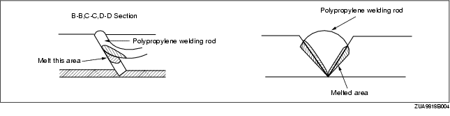
*Note*{: #wp1058731}
• Heat the shaded area to melt it. {: #wp1060178}• Take care not to overly melt welding rod. If the part is welded with the welding rod melted like jelly, the welding strength will be reduced. {: #wp1058749}• Hold the heat gun 10-20 mm {0.39-0.79 in} from the part being welded. {: #wp1058759}• Do not move the welding rod until the welded parts cool.
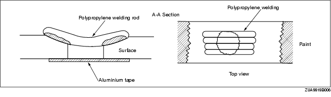
- Sand the surface of the polypropylene gradually as it is easily melted by the abrasion heat. Sand the area to which repair agent will be applied.{: #wp1058806}
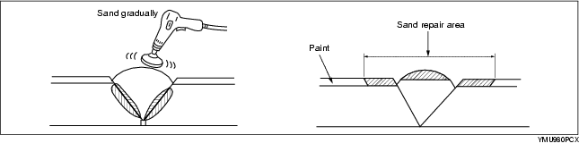
- Uniformly apply polypropylene primer with a brush to an area larger than the repaired area. Allow to dry about 10 minutes at 20 °C {68 °F}.{: #wp1058835}
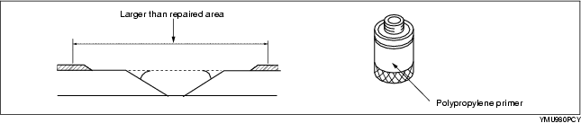
- Mix the main agent and the stiffening agent in a ratio of one to one. Apply the mixed repair agent to the damaged area.
*Note*{: #wp1058894}
• When mixing the main and stiffening agents, take care not to allow bubbles to form. {: #wp1060179}• The repair agent hardens quickly (about 5 minutes); proceed with the work immediately after mixing the agents. {: #wp1058912}• Allow about 30 minutes to dry (20 °C {68 °F}) before sanding.
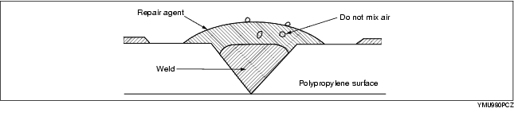
The repair agent is a two part epoxy adhesive.
When the repair agent hardens, it will provide a good finish with the same flexibility as the polypropylens.
The repair agent for a urethane bumper is also a two part adhesive compound. However, this is different from that for a polypropylene bumper. If the incorrect repair agent is used, the repair will be faulty.
- Sand the area with #180-240 sandpaper.
*Note*{: #wp1059000}
• If excessive force is applied to the area when sanding, the surface will be damaged. {: #wp1060180}• If fuzz remains around the repaired area, melt it with a heat gun.
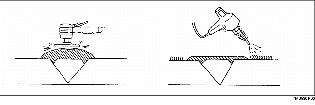
-
Degrease the painted surface.
-
Mix the primer and the hardener at a ratio of one to one. Apply the primer to the repaired area and the surface of the bumper with a brush or spray.{: #wp1059057}
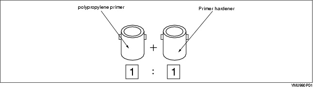
Use the primer within 16 hours after it is mixed.
*Note*{: #wp1059102}
• Polypropylene primer will dissolve even after drying if it is wiped with solvent. Use only water to clean around the primer.
-
Allow the part to dry.
-
Add the softener to the urethane primer surfacer and spray it on the repaired area.
a. Mixing method
{: #wp1059140}Urethane primer surfacer + Softener ..... Mixture A
{: #wp1059154}Mixture A + hardener ..... Mixture B
{: #wp1059162}Dilute mixture B with thinner to spray on bumper
{: #wp1059170}b. Viscosity
{: #wp1059176}14-16 seconds/viscosimeter 20 °C {68 °F}
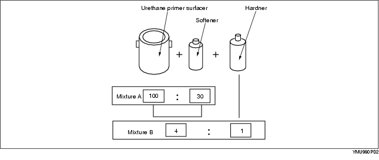
*Note*{: #wp1059222}
• Mix the solutions at the specified ratio.
c. Spray pressure {: #wp1059240}300-400 kPa {3-4 kg/cm2, 43-57 psi} {: #wp1059250}d. Standard film thickness {: #wp1059276}30-40 m {: #wp1059286}e. Spray method {: #wp1059295}Spot-spray primer surfacer on bumper three of four times
- Air drying 20 °C {68 °F} - 8 hours minimum.
Forced drying 60 °C {140 °F} - 1 hour
-
Lightly sand the complete surface of the bumper with #400-#600 sandpaper. Do not expose the surface of the polypropylene. (Wet or dry sanding is acceptable.)
-
Wipe the complete surface of the bumper with degreasing agent. Quickly wipe the surface with a clean rag to degrease it.
-
Apply a matching coat of body color to the polypropylene bumper.
*Note*{: #wp1059384}
• Be sure to use only urethane primer for a urethane bumper and polypropylene primer for a polypropylene bumper. Other paints for repairing a polypropylene bumper are the same as those for the urethane bumper.
- Air drying 20 °C {68 °F} - 8 hours minimum.
Forced drying 60 °C {140 °F} - 1 hour
*Note*{: #wp1059438}
• Let the part air dry when possible as forced drying could cause bubbles in the top coat.